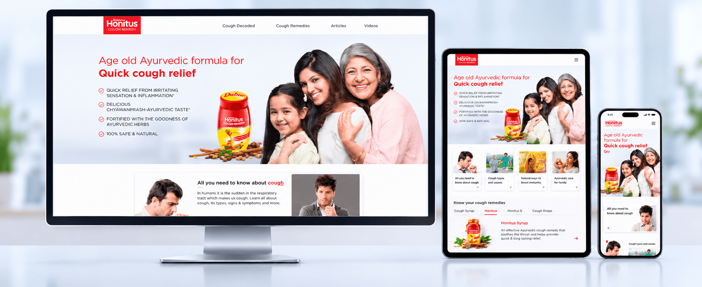
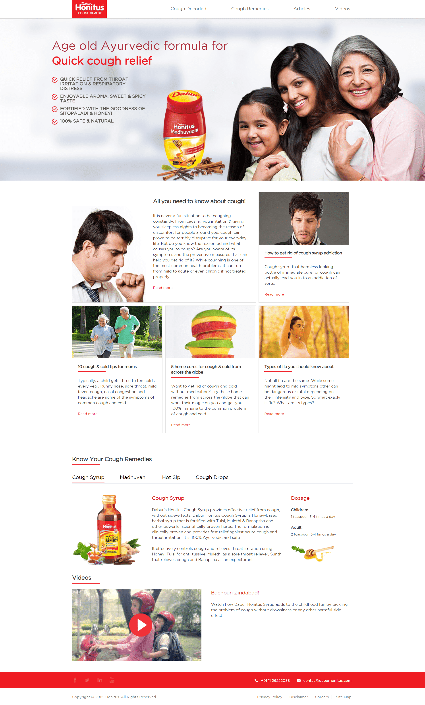
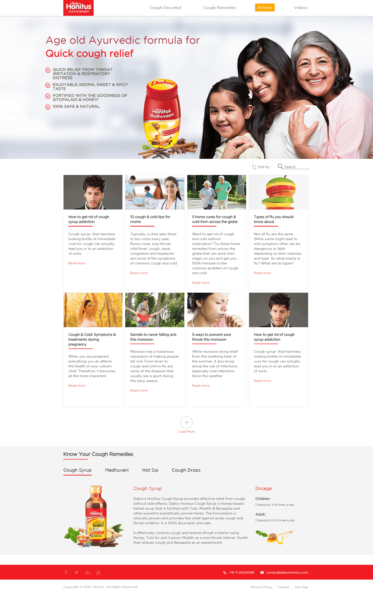
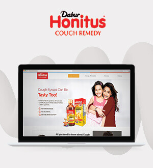

Some visitors need to decode symptoms, some want practical reading, and others arrive looking for a specific remedy.
← Back to workDecode cough.
Dabur Honitus · Content-Led Website
Decode cough.
Deliver clarity.

Project overview
More than a product page.
A useful health-content destination.
People searching for cough relief usually arrive with questions before they arrive with product intent.
We designed a responsive brand platform that connects cough education, practical articles, remedy discovery and Honitus products in one clear experience.
- Platform
- Brand + Content
- Information
- Cough Education
- Portfolio
- Remedy Range
- Build
- Responsive Web
The central idea
Answer the concern.
Then introduce the remedy.
The experience begins with what users need to understand: cough types, symptoms, everyday care and when persistent symptoms need professional attention.
Product information enters as part of that journey, creating a more useful and credible relationship than a sales-first page.
The experience challenge
Make information approachable.
Keep navigation precise.
Health-related content needs readable hierarchy, restrained language and clear pathways without overwhelming the user.
The information journey
Concern to context.
Context to choice.
- 01
Decode
Explain cough, common types and related symptoms in accessible language.
- 02
Explore
Use articles and videos to organise useful, searchable guidance.
- 03
Compare
Bring syrup, Madhuvaani, Hot Sip and cough drops into one remedy family.
- 04
Understand
Present product details, ingredients and label-led usage information clearly.
The website experience
A complete system.
Built around real questions.
The interface combines a reassuring product world with modular editorial content, allowing education and remedy discovery to support each other.
Homepage ecosystemBrand promise, articles, remedy range and video

Editorial discoverySearchable article library connected to products

The content architecture
Useful by design.
Consistent by system.
Clear hierarchy
Large propositions, concise cards and predictable labels make dense information easier to scan.
Editorial modules
Reusable content cards support new seasonal topics without redesigning the experience.
Range navigation
Remedy tabs keep related formats visible and comparable within one family.
Responsive reading
Content order, text measure and product details remain practical across screen sizes.
Designed for reassurance
Calm enough to trust.
Clear enough to use.
White space, familiar red brand cues and direct navigation create a straightforward experience around a subject that can otherwise feel complicated.

The outcome
One destination.
Multiple reasons to return.
A responsive content and product platform that helps users move from an immediate question to informed exploration without losing sight of the Honitus remedy portfolio.
Stronger utility
Articles, videos and cough education give the website value beyond a single product visit.
Clearer discovery
Symptoms, content and remedies are organised into understandable pathways.
Connected portfolio
Multiple Honitus formats appear as one coherent family rather than isolated pages.
Information first.Confidence follows.
Building a useful digital destination?